O Instituto Acessos e Cidadania atua diretamente nas comunidades, orientando pessoas a superar barreiras burocráticas e tecnológicas para acessar serviços públicos e proteção social.
O Instituto Acessos e Cidadania é uma iniciativa de impacto social que atua como mediador entre o cidadão e os órgãos de proteção social, superando os obstáculos burocráticos e tecnológicos que impedem milhares de pessoas de acessar seus direitos fundamentais.
Com metodologia inovadora e humanizada, o projeto busca empoderar o cidadão para que ele seja capaz de demandar o poder público de forma efetiva, contribuindo para a construção de uma cultura de exercício de direitos nas comunidades.
A visão de longo prazo é transformar essa iniciativa em uma política pública que aperfeiçoe a prestação de serviço público em todo o país, alterando o modo como a população litiga e se relaciona com o Estado.
Um processo humanizado em quatro etapas para garantir que cada cidadão saia orientado e empoderado para resolver sua demanda.
Chegamos às comunidades por meio de associações de bairro, redes sociais, templos religiosos e carro de som — levando o projeto diretamente a quem precisa.
Cada cidadão é atendido com escuta ativa, empatia e acolhimento, em um ambiente acolhedor. Identificamos a demanda e traçamos o melhor caminho para sua resolução.
Entregamos um "flash card" personalizado com o fluxo de ação detalhado, indicando os órgãos, documentos e passos necessários para resolver a demanda.
Enviamos um vídeo passo a passo com orientações práticas e visuais, facilitando o entendimento mesmo para quem tem baixo letramento digital.
Atuamos em seis grandes áreas do direito e da proteção social, orientando o cidadão a partir da sua demanda específica.
Aposentadoria, BPC/LOAS, pensão por morte, auxílio-doença e demais benefícios do INSS. Orientamos sobre documentação, prazos e como utilizar o Meu INSS.
CAD Único, Bolsa Família, CRAS, CREAS e demais políticas de assistência social. Intermediamos o acesso aos serviços da rede de proteção social básica.
Direitos trabalhistas, FGTS, seguro-desemprego, carteira assinada e relações de trabalho informal. Orientamos sobre como buscar seus direitos.
Negativação indevida, cobranças abusivas, contratos lesivos e relações de consumo. Orientamos sobre PROCON, Reclame Aqui e demais canais.
Questões de família, pensão alimentícia, regularização de documentos, herança e demandas cíveis em geral junto à Defensoria Pública.
Do campo às redes sociais, atuamos de diversas formas para levar informação e acesso a direitos às comunidades.
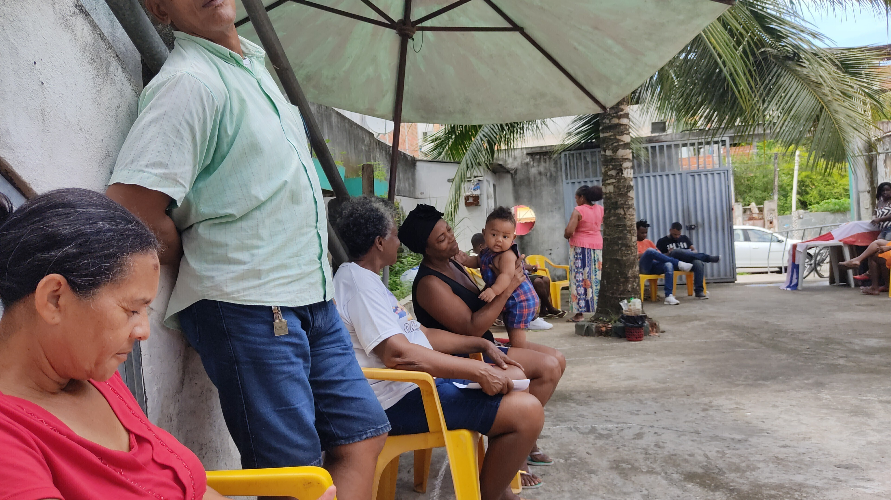
Eventos presenciais nas comunidades com atendimento multidisciplinar — advogados, assistentes sociais e orientadores —, cobrindo demandas extrajudiciais em diversas áreas. Já realizamos mutirões em Itapuã/Tokaia e Nordeste de Amaralina.
Cada atendimento representa uma vida transformada. Conheça casos reais de cidadãos que tiveram seus direitos garantidos com o apoio do Instituto.
Dona Lili tinha direito à aposentadoria pelo INSS, mas enfrentava as barreiras burocráticas e digitais que impedem tantos cidadãos de acessar o que lhes é de direito. Sem suporte para navegar pelos sistemas e prazos do serviço público, o benefício parecia fora de alcance.
O Instituto Acessos e Cidadania entrou em campo: orientou, acompanhou e protocolou o pedido de aposentadoria de Dona Lili junto ao INSS. O resultado não poderia ser melhor — o pedido foi deferido.
"Entramos com o pedido de aposentadoria de Dona Lili. Já foi deferido. Precisamos levar a boa notícia e gerar um fato com essa ação." — Jorge Vieira, coordenador do projeto
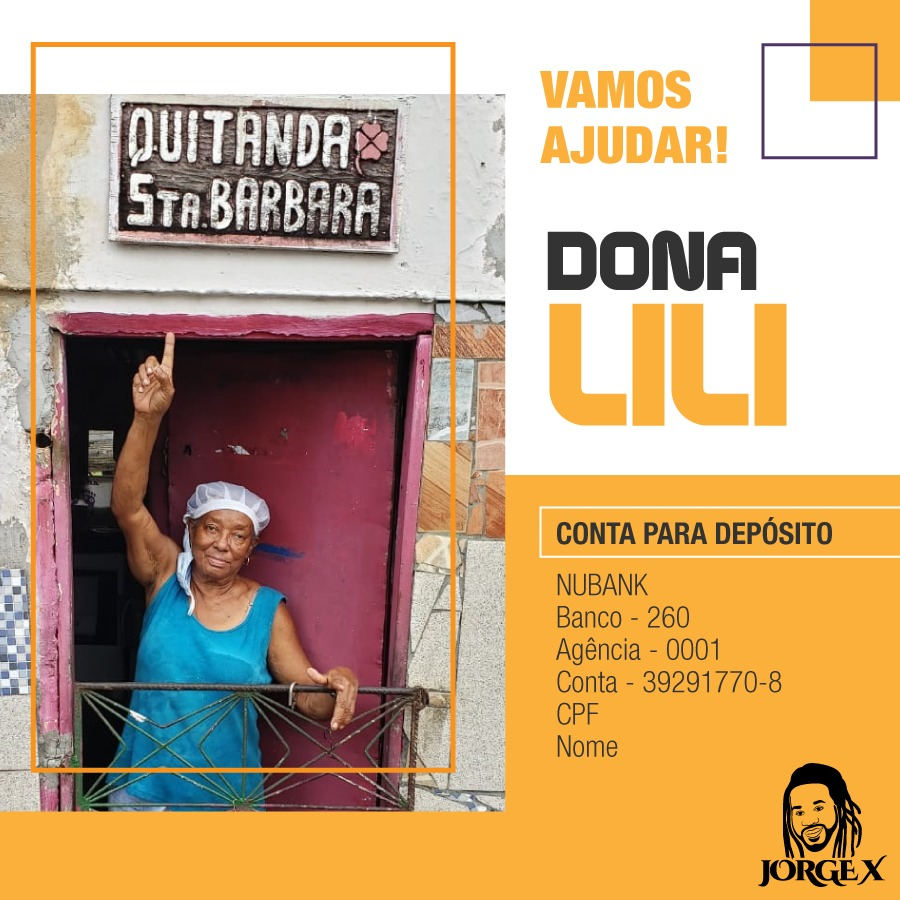
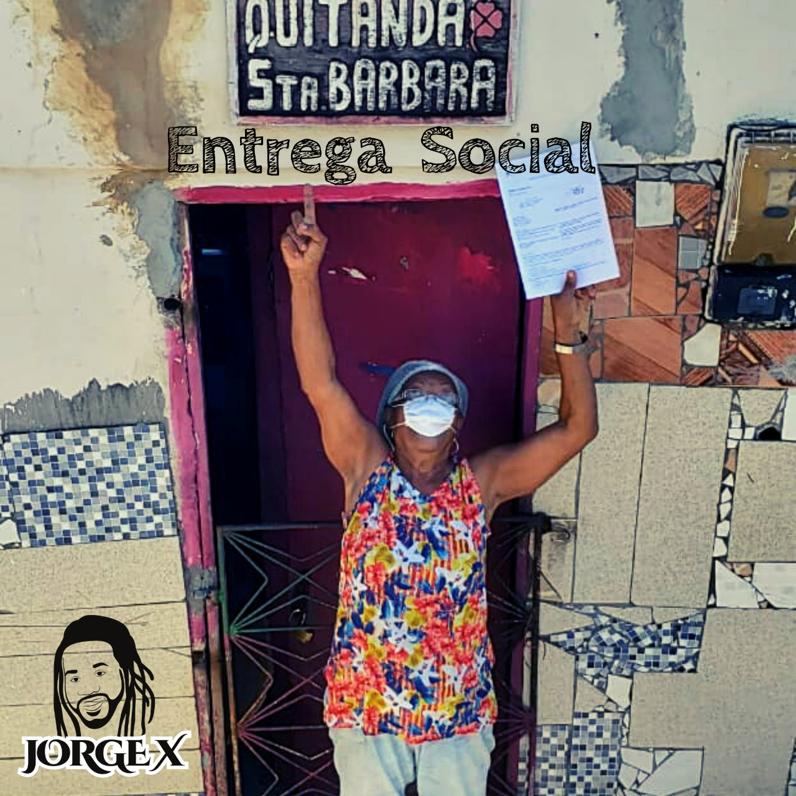
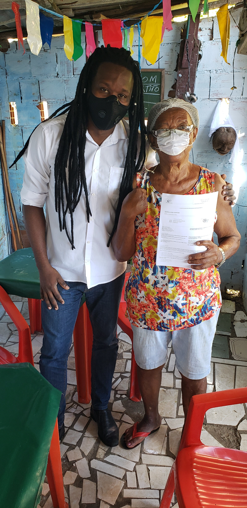
Nosso foco principal são cidadãos adultos entre 45 e 90 anos, com baixo letramento digital, que enfrentam dificuldades para acessar serviços públicos essenciais por conta própria.
Atuamos especialmente com populações vulneráveis que se encontram no abismo entre seus direitos e os aparelhos estatais responsáveis por garantir esses direitos.
Exclusão tecnológica e falta de acesso digital
Baixo letramento digital e educacional
Pobreza e vulnerabilidade socioeconômica
Burocracia disfuncional e acesso dificultado
Registros dos mutirões da cidadania e ações itinerantes realizados nas comunidades de Salvador.
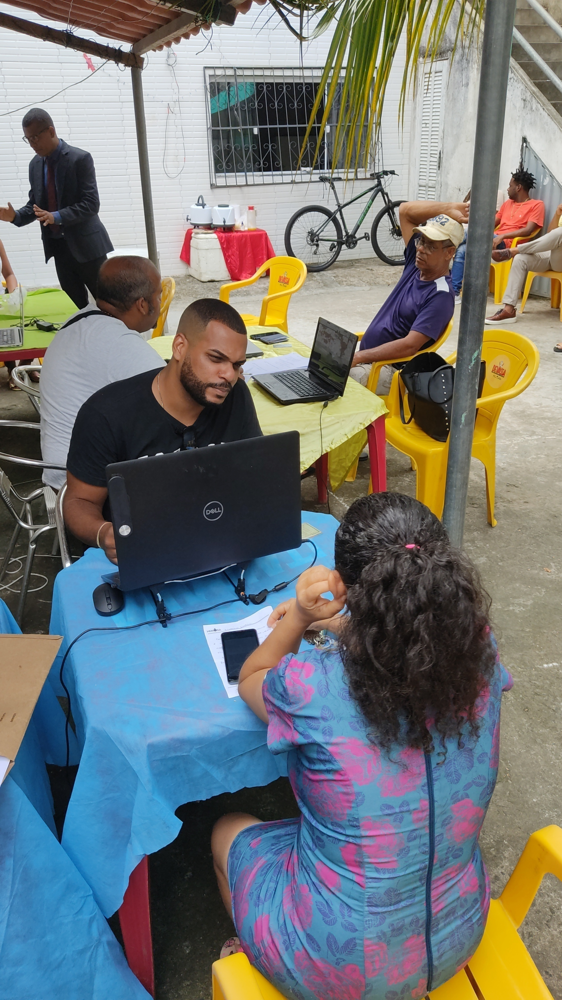
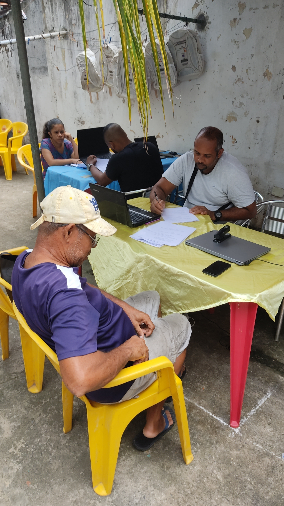
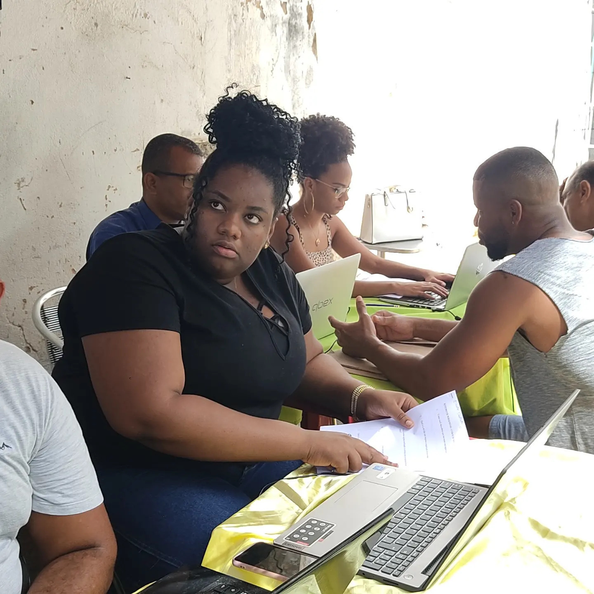
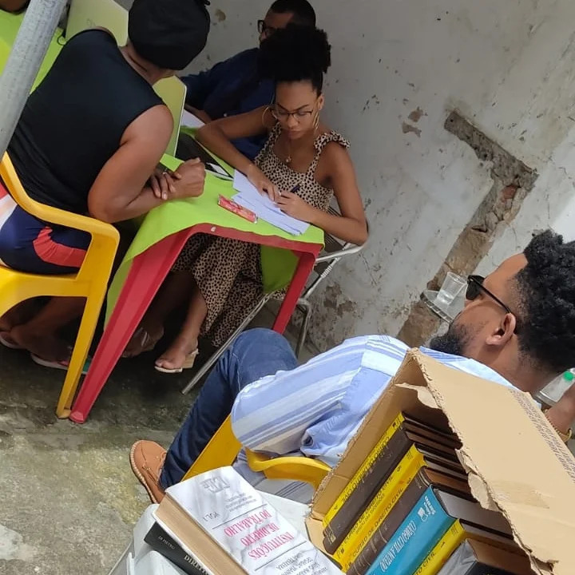
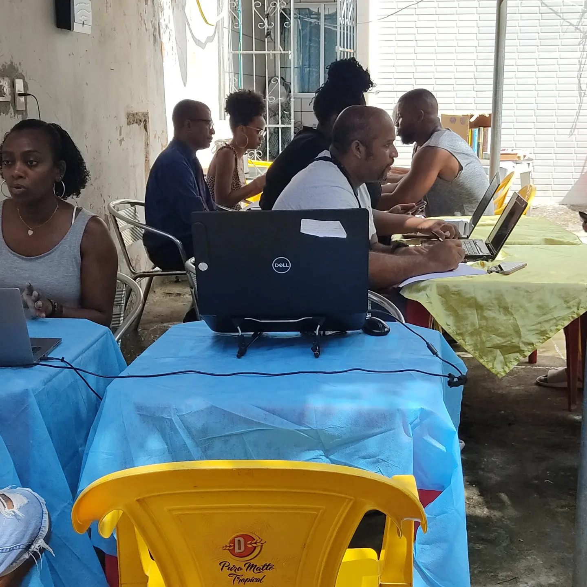
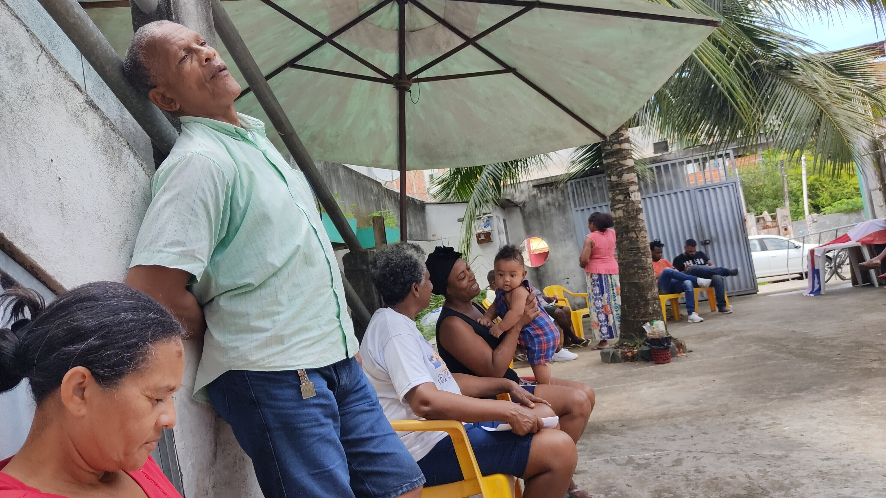
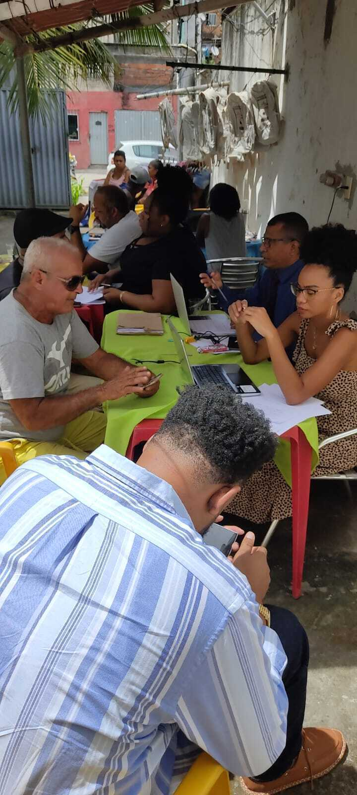
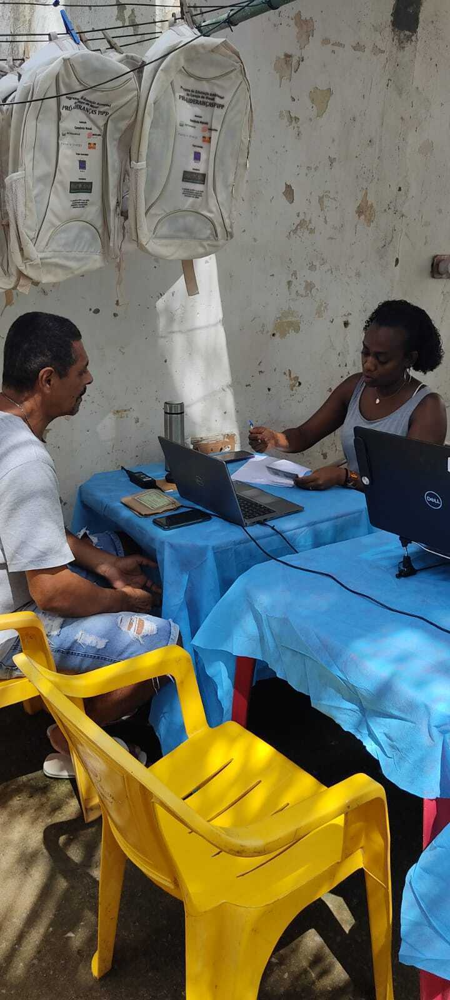
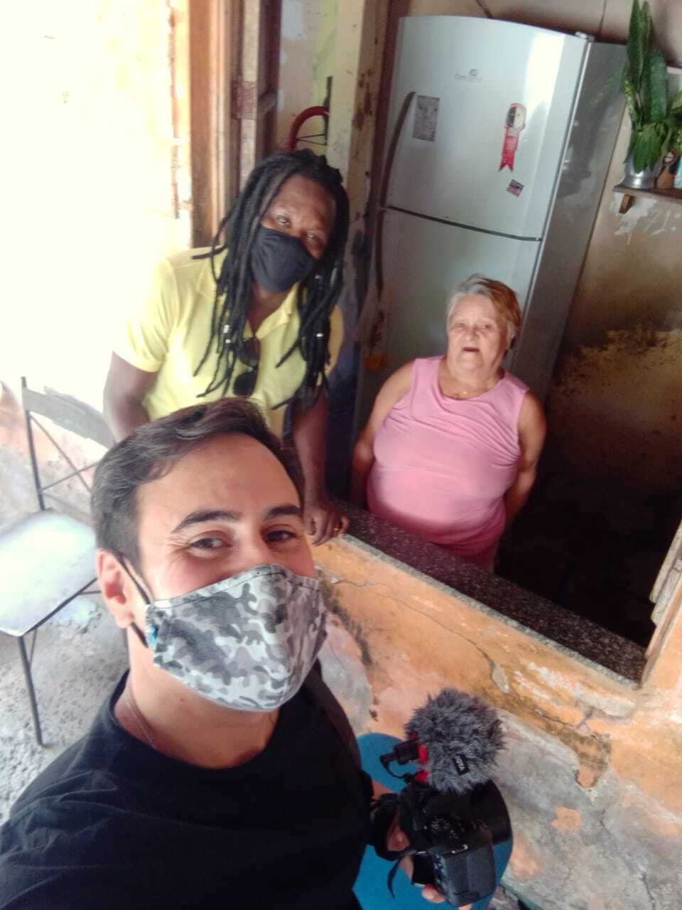
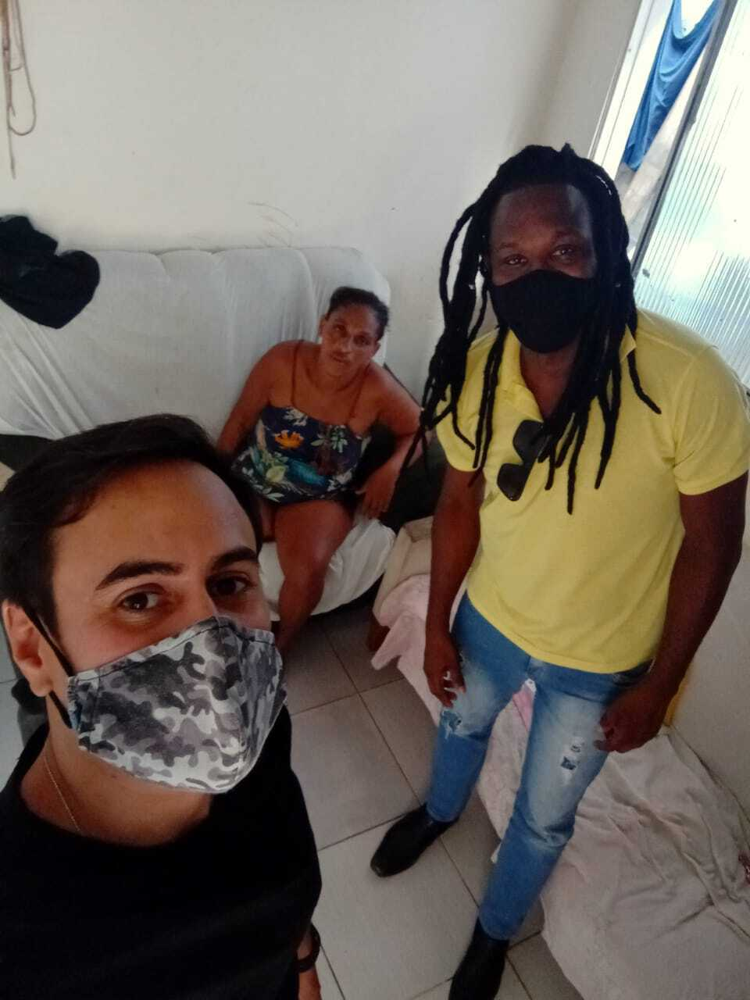
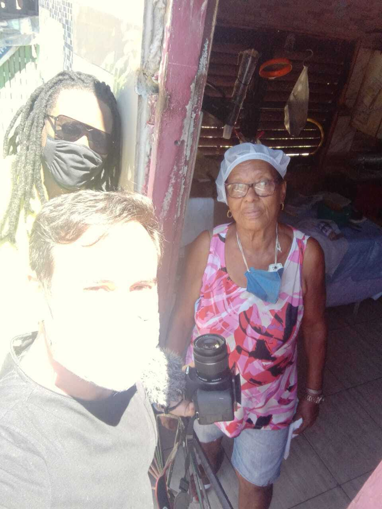
Um dos pilares do Instituto Acessos e Cidadania é orientar o cidadão sobre qual órgão público procurar para resolver cada tipo de demanda — fornecendo endereços, telefones, competências e formas de atendimento de cada instituição.
Ao ser atendido pelo projeto, o cidadão recebe orientação precisa sobre a porta de entrada correta para o serviço público que precisa, economizando tempo, evitando desgastes e aumentando as chances de resolução da sua demanda.
Mapeamos qual instituição tem competência para resolver sua demanda específica
Fornecemos endereço, telefone e horário de atendimento de cada órgão
Orientamos sobre quais documentos levar para evitar retornos desnecessários
Entregamos um cartão com o passo a passo completo para o cidadão seguir
A forma humanizada de escuta as minhas demandas me impressionou. Quem dera todo o serviço público fosse assim.
Recursos, artigos e orientações práticas para que você conheça seus direitos e saiba como acessá-los.
Entenda como funciona o INSS, quais benefícios existem (aposentadoria, BPC/LOAS, pensão, auxílio-doença) e como solicitar pelo Meu INSS.
Quero orientação →Saiba como se cadastrar no CAD Único, acessar o Bolsa Família, e quais serviços o CRAS e CREAS oferecem para sua família.
Quero orientação →Quem tem direito à assistência jurídica gratuita, como agendar atendimento e a diferença entre Defensoria Pública Estadual (DPE) e Federal (DPU).
Quero orientação →Como contestar cobranças indevidas, negativação no nome e contratos abusivos. Aprenda a usar o PROCON e os canais de reclamação.
Quero orientação →FGTS, seguro-desemprego, registro em carteira, verbas rescisórias — saiba o que você tem direito e como reivindicar.
Quero orientação →Aprenda a usar o Gov.br, Meu INSS, CAD Único online e outros portais públicos. Orientamos passo a passo para quem tem pouca familiaridade digital.
Quero orientação →Somos um modelo replicável de política pública. Há diversas formas de contribuir para que mais cidadãos tenham acesso aos seus direitos.
O Instituto Acessos e Cidadania é um modelo metodológico pronto para se tornar política pública. Apresentamos resultados concretos de atendimento nas comunidades baianas e estamos abertos a parcerias via emenda parlamentar, convênio ou programa de governo.
Advogados, defensores e promotores podem atuar voluntariamente nos mutirões da cidadania, orientando a população sobre seus direitos e contribuindo com sua expertise jurídica.
Quero ser voluntário →Apoie o projeto por meio de patrocínio, doação de equipamentos ou responsabilidade social corporativa. Sua marca associada a um projeto de impacto real na vida das comunidades.
Quero apoiar →Profissionais de serviço social, psicologia, comunicação e outras áreas são bem-vindos para reforçar o atendimento humanizado nas ações de campo.
Quero participar →Precisa de orientação? Quer ser parceiro? Entre em contato conosco.
Estamos disponíveis para atendimento, parcerias institucionais e para responder suas dúvidas. Escolha o canal de sua preferência.